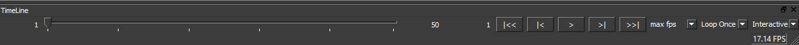

Timeline ウィジェット¶
Timeline ウィジェットは再生機能へのアクセスを提供します。
Timeline ウィジェットには：
Frame slider
フレームスライダにより時間をいったり戻ったりできます。
Buttons
ボタンをおすことで、再生、停止、1フレ送り、最終フレームに移動ができます。
Loop mode
ループモードを設定できます。通常ループ、振動（ピンポン）、ループしない。
Playback mode
You can either playback interactively (any time change causes a single evaluation) or in a simulated fashion, where every time change forward causes the evaluation of all in between frames.
注釈
You can pull the time into the graph by adding an input port called timeline of type Float32 or SInt32. This only works in Fabric Standalone. In a DCC like Maya you will have to hook up a specific port to the time using a expression.